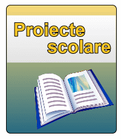

Transparenta
Asigurarea transparentei
Cerința de transparență este adresată în scopul primirii de informații, deschidere, comunicare și evaluare. În strânsă legătură cu cerința pentru o politică transparentă este cerința unei transparențe în administrație.
Planuri de activitate
Elevii au studiat timp de trei luni despre viața albinelor. Inițiativa se înscrie în proiectul educațional „Albinele sunt prietenii noștri”.
Proiecte
Proiectele pentru eTwinning sunt realizate, de regulă, între două şcoli, însă este posibilă şi implicarea mai multor şcoli. Ele pot fi proiecte pe discipline de studiu sau transdisciplinare.
Rapoarte de activitate
Paginile de discuție sunt locul unde oamenii discută despre cum să facă activitatea scolii să fie cât se poate de buna. Puteți utiliza această pagină pentru a începe o discuție cu alții despre cum să se îmbunătățească activitatea scolii